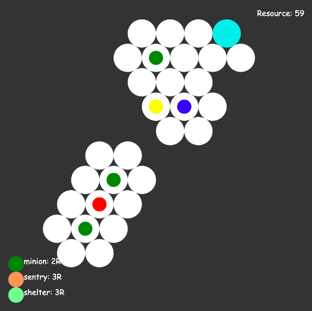
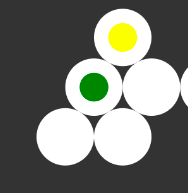
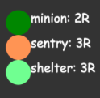

欢迎来到《蜂巢》！
你的任务是解救人质。请小心，这个区域有癌变蜂群游荡。为了协助这次计划，指挥部为你安排了三个雇佣兵，他们可以阻挡癌变蜂群的的行动。你的资源是有限的，尽量速战速决。
深蓝色小球代表你，绿色小球代表你的雇佣兵。点击小球，然后点击相邻的一个空格，可以实现移动。你每回合只能移动一个单位。移动单位消耗1点资源。浅蓝色区域代表你的基地，你需要和人质都回到基地才算完成任务。
红色小球是癌变蜂群，不要让它碰到你或你的基地！每回合，每个癌变蜂群会随机朝一个可以通行的方向移动一格。
虽然雇佣兵可以在一定程度上阻挡癌变蜂群，但不要让两个雇佣兵从两面夹击同一个蜂群，这会激怒它！
黄色小球是蛹。一旦癌变蜂群接触了蛹，蛹便会孵化为另一个癌变蜂群，所以你最好能及时破坏它们。
紫色区域是囚禁人质的地方，只有你本人能解救他。
你和雇佣兵的视野都是1格。有时候你会看不见相邻的区域，这是因为你和该区域之间隔了一堵墙。
有一些特殊区域：岗哨（橙色）使视野扩大1格；庇护所（浅绿）无法被癌变蜂群闯入；仓库（黄色）会一次性给予你一些资源。
你可以消耗一定资源建造岗哨或庇护所，或在基地招募额外的雇佣兵。点击左下角对应的圆圈，再点击地图上一个区域即可。
返回游戏